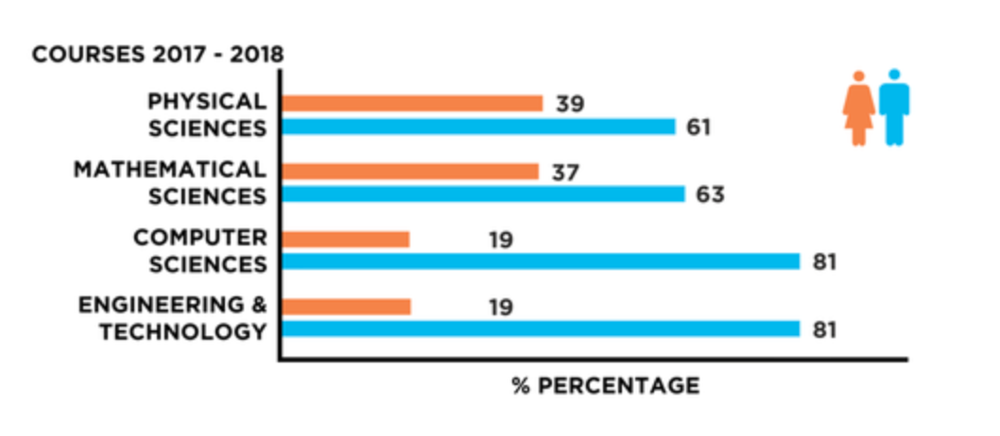
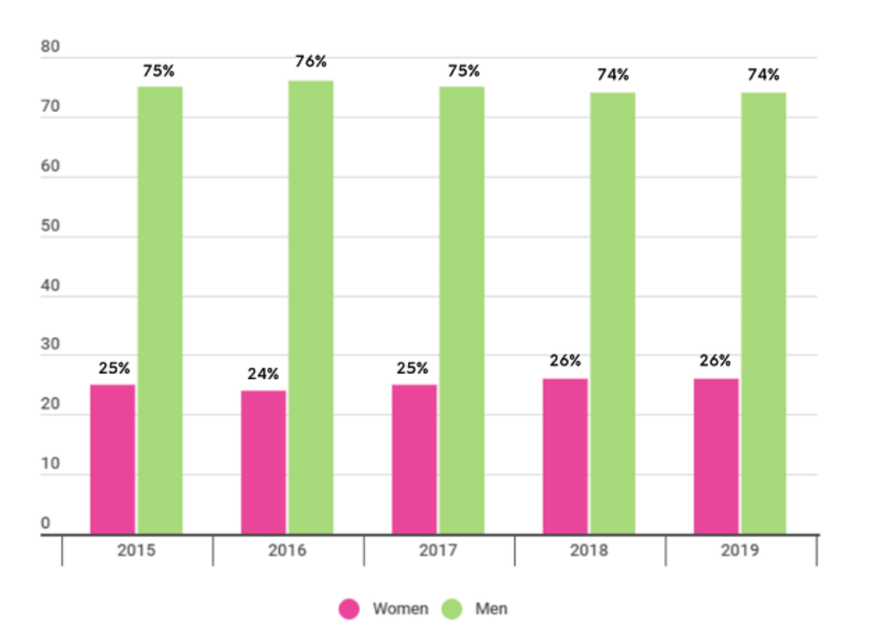

...................................................................................................................................................................................
Shocking Statistics
According to the UNESCO, only 35% of all students in higher level STEM fields are female.
According to techjury, in 2020 approx. 25% of employees for big corporations such as Amazon, Apple, Facebook, Google, and Microsoft.
Information from SBV concludes that only 37% of technology based small companies consist of at least one women on their board.
Sourced from TechRadius, the ratio between men and women in engineering is 5:1.
74% of young girls show interest in careers rooted in STEM, stated by TechCrunch
In relation to the previous point, only 18% of bachelor degrees majoring in Computer Science in 2016 were female
As reported by whatsthehost.com, the percentage of women in Computer Science in the US drastically declined from 37% in 1984 to 18% in 2018.
As mentioned by techjury, in 2018 only 20% of technology based jobs were being held by women.
Accoridng to a study conducted by PayScale in 2020, a women is scheduled to make 2% less than a man with the exact same qualifications and work ability.
According to the same study as previosuly mentioned, in general regards of their occupation, women make .81 USD for every 1 USD a man makes.
According to Ncwit, the percentage of a woman quitting her technological occuption is twice as likely as a a man.


Image on the left broadly descirbes the overall percentage difference of Women and Men in STEM between the years of 2015 and 2019.
Image on the right depicts the in specifics, the difference in Female and Male inclusion in varying STEM courses within the school year of 2017 to 2018.
Both images sourced from STEM Women